239 — SCC, VPC Service Controls, KMS y FinOps
Parte: 19 — Google Cloud: arquitectura de datos y operación en producción
Nivel: avanzado · Horas estimadas: 4
Laboratorio: security · Estado: EXECUTABLE_CORE
🎯 Propósito
Cerrar la operación de Google Cloud con la seguridad y el coste, que aquí tienen dos piezas propias: el perímetro de servicio, que es el control que impide sacar datos aunque los permisos lo permitan, y el modelo de descuentos automáticos, que cambia el cálculo de los compromisos. La clase cubre la postura y la detección con la disciplina de la clase 226, y el control de coste con la de la 214.
📚 Resultados de aprendizaje
Al finalizar podrás:
- Priorizar los hallazgos de seguridad por alcance y por camino de ataque.
- Aplicar perímetros de servicio y entender qué cierran.
- Gestionar claves de cifrado propias donde aportan.
- Atribuir el coste y aprovechar los descuentos automáticos.
- Comprometer capacidad solo tras retirar y redimensionar.
🧩 Conceptos centrales
| Concepto | Comprensión verificable |
|---|---|
perímetro de servicio |
Frontera que restringe qué API pueden usarse hacia dentro y hacia fuera de un grupo de proyectos. |
camino de ataque |
Secuencia de pasos desde un punto expuesto hasta un dato valioso. Ordena la prioridad. |
clave gestionada por el cliente |
Clave de cifrado bajo control propio. Permite revocar el acceso a los datos por completo. |
descuento por uso sostenido |
Rebaja automática por mantener recursos encendidos, sin compromiso. |
compromiso de uso |
Descuento a cambio de un compromiso de gasto o de capacidad durante uno o tres años. |
etiqueta de facturación |
Etiqueta que aparece en el desglose de costes. Distinta de las que se usan en condiciones de permiso. |
🧠 Modelo mental
Google Cloud combina una jerarquía estricta de recursos con una red global y servicios data-first; proyecto, cuota e IAM forman una unidad operativa.
Aplicado a esta clase, separa siempre cuatro planos: intención (qué necesita el usuario), configuración (qué declaramos), estado observado (qué existe de verdad) y evidencia (cómo sabemos que cumple). Confundirlos produce diseños que se ven correctos en un diagrama pero fallan al operar.
🗺️ Flujo de razonamiento

📖 Desarrollo
1. Postura y caminos de ataque
La disciplina es la de la clase 226 y aquí hay una herramienta que la hace directa.
LO QUE PRODUCE LA EVALUACIÓN CONTINUA
hallazgos de configuración: público, sin cifrar, sin
copias, versión antigua
hallazgos de identidad: permisos amplios, claves
hallazgos de vulnerabilidades
Y LO QUE ORDENA EL TRABAJO
no la gravedad declarada
sino los CAMINOS DE ATAQUE
«desde esta máquina expuesta, con esta cuenta de
servicio, se llega a este conjunto con datos de
clientes»
→ con la puntuación de exposición calculada
→ y esos caminos concentran más riesgo que cientos de
hallazgos sueltos clase 226
Y el orden de trabajo, ya conocido:
1 cerrar los caminos que terminan en datos
2 reducir el alcance de las identidades más amplias
clase 230
3 impedir por política que lo arreglado vuelva
clase 229
4 remediar el resto por lotes ley 27
5 aceptar por escrito lo que no compensa clase 189
Y los hallazgos que se repiten en esta nube:
cuentas de servicio con papel de proyecto clase 230
claves de cuenta de servicio sin caducidad
almacenes con acceso a «todos los usuarios autenticados»
→ que significa cualquier cuenta de Google, no solo la
organización
→ y es el hallazgo que más sorprende
reglas de cortafuegos con selector por etiqueta clase 229
conjuntos analíticos con acceso al conjunto entero
clase 236
y proyectos sin carpeta, que no reciben políticas
Y la comprobación de la detección:
simular técnicas conocidas y medir qué proporción se
detecta
→ es la única medida real clase 226
→ y las que no se detecten son la lista de trabajo
2. El perímetro de servicio
Este es el control propio de esta nube y el que cierra el hueco que dejan los permisos.
EL PROBLEMA QUE RESUELVE
una identidad con permiso legítimo sobre unos datos puede
copiarlos a un proyecto de otra organización
→ el permiso lo autoriza
→ la red no lo impide, porque va por la API de la
plataforma clase 200, 231
EL PERÍMETRO
agrupa proyectos y restringe qué API pueden usarse
desde fuera hacia dentro ← quién puede leer
desde dentro hacia fuera ← a dónde se puede escribir
→ y una identidad de dentro NO puede escribir en un
recurso de fuera del perímetro
Y lo que hay que hacer para que funcione sin romper nada:
1 DEFINIR el perímetro: qué proyectos y qué servicios
2 MODO DE SIMULACIÓN: registra lo que bloquearía
3 MEDIR semanas
4 DECLARAR los accesos legítimos que cruzan
reglas de entrada y de salida, por identidad, por
proyecto y por servicio
5 APLICAR
→ activar sin simular corta integraciones legítimas
→ y es la misma disciplina de las clases 200, 209 y 217
Y lo que suele aparecer en la simulación:
herramientas de terceros que leen datos
canalizaciones de otro proyecto
copias hacia un proyecto de análisis
el propio equipo consultando desde su portátil
→ y eso obliga a decidir: ¿se declara o se prohíbe?
Las claves gestionadas por el cliente, con lo que aportan de verdad:
QUÉ APORTAN
el control de la clave: revocarla hace los datos
inaccesibles, incluso para el proveedor
→ y eso es lo que exigen algunos requisitos
clase 177
rotación bajo control propio
y registro de cada uso de la clave clase 238
QUÉ CUESTAN
operación: rotación, permisos, disponibilidad de la clave
y si la clave se pierde o se revoca por error, los datos
son irrecuperables
→ esa es una consecuencia real, no teórica
DÓNDE APLICARLAS
donde haya requisito o datos sensibles
no en todo ley 26
Y una advertencia operativa:
la clave vive en una región
→ si esa región no está disponible, los datos cifrados con
ella tampoco
→ y eso entra en el cálculo del techo de disponibilidad
clase 185
3. Coste: los descuentos que ya se aplican
Aquí hay una diferencia que cambia el cálculo de los compromisos.
DESCUENTO POR USO SOSTENIDO
se aplica AUTOMÁTICAMENTE por mantener recursos
encendidos durante el mes
→ sin compromiso, sin contratar nada
→ y llega a ser apreciable
Y LA CONSECUENCIA
el compromiso de uso añade descuento SOBRE lo ya
descontado
→ el ahorro incremental es menor de lo que sugiere el
porcentaje anunciado
→ y hay que calcularlo con las cifras propias, no con el
porcentaje del catálogo clase 227
Y los tipos de compromiso:
POR GASTO
se compromete una cantidad por hora
+ flexible: se aplica a lo que haya
− descuento menor
POR RECURSO
se compromete una cantidad de CPU y memoria en una región
+ descuento mayor
− rígido: si se cambia de región o de familia, se pierde
→ y el orden de la clase 227 sigue valiendo
retirar → redimensionar → apagar → y ENTONCES comprometer
La atribución, con la particularidad de las etiquetas:
HAY DOS MECANISMOS DE ETIQUETADO
uno aparece en el desglose de FACTURACIÓN
otro sirve para CONDICIONES de permiso y para políticas
clases 229, 230
→ y no son intercambiables
→ usar el equivocado hace que el gasto no se atribuya
Y LA JERARQUÍA AYUDA
el desglose por PROYECTO es directo y limpio
→ y por eso la separación por proyecto de la clase 229
es también una decisión de atribución
Y el resto del método, que es el de la clase 214:
etiquetas obligatorias en la creación, por política
presupuestos por proyecto, sobre previsión, con acción en
no producción
detección de anomalías por servicio y por dueño
retirada automática de lo ocioso: apagar antes de borrar
y coste por unidad de negocio
Y las partidas que sorprenden en esta nube:
consultas del almacén analítico clase 236
registros de acceso a datos clase 238
almacenamiento de mensajes sin confirmar clase 237
tráfico entre zonas y entre regiones
mínimos de capacidad de las bases distribuidas clase 235
y los proyectos sin uso que nadie retira ley 25
4. El ritmo, y lo que se degrada solo
Coste y seguridad comparten la propiedad de degradarse sin intervención, y esta clase cierra la parte con el mismo calendario de la 227.
SEMANAL
anomalías de coste abiertas
hallazgos críticos nuevos
recursos ociosos retirados
MENSUAL
coste por unidad de negocio y su tendencia
cobertura y utilización de compromisos
proyectos sin uso
y hallazgos por camino de ataque
TRIMESTRAL
simulación de técnicas y proporción detectada clase 226
prueba del acceso de emergencia clase 230
revisión de accesos y de exenciones
y un experimento de resiliencia clase 227
ANUAL
ejercicio de pérdida de región clase 215
revisión de las decisiones registradas clase 190
Y las señales que dicen si está sano:
SEGURIDAD
caminos de ataque que terminan en datos → cero
proporción de técnicas simuladas detectadas
claves de cuenta de servicio → cero
proyectos sin carpeta → cero
y perímetros con reglas de excepción sin fecha → cero
COSTE
gasto atribuido > 90 %
coste por unidad de negocio tendencia
utilización de compromisos > 95 %
proyectos sin uso tendencia a
cero
Y una comprobación honesta, la misma de la clase 226:
¿cuántos incidentes detectó el centro y cuántos se
detectaron por otra vía?
→ y las vías de siempre: una factura, un tercero, un
inventario, una persona
Y la lista de comprobación de la clase:
☐ los hallazgos se ordenan por camino de ataque
☐ no hay caminos que terminen en datos sensibles
☐ no hay almacenes con acceso a todos los usuarios
autenticados
☐ hay perímetros de servicio sobre los proyectos con datos
☐ los perímetros se simularon antes de aplicar
☐ las reglas de excepción del perímetro tienen dueño y
fecha
☐ las claves propias están donde hay requisito, y su
región entra en el cálculo de disponibilidad
☐ las etiquetas de facturación son las correctas
☐ el gasto atribuido supera el 90 %
☐ se retiró y redimensionó antes de comprometer
☐ el descuento incremental del compromiso se calculó sobre
el ya aplicado
☐ hay presupuestos con acción y detección de anomalías
☐ se simulan técnicas y se publica la proporción detectada
☐ existe el calendario semanal, mensual, trimestral y anual
Y el cierre que enlaza con la clase siguiente: con todo lo de esta parte montado, queda ponerlo junto en un sistema productivo, compararlo con las otras dos nubes y cerrar la parte. Es la materia de la clase 240.
🔬 Ejemplo trabajado
CloudShop cierra la operación de Google Cloud. Lo que sigue son los almacenes accesibles por cualquier cuenta de Google, el perímetro que cortó una integración legítima, y el cálculo de compromiso que resultó dar mucho menos de lo anunciado.
La postura, ordenada por camino de ataque:
hallazgos abiertos 2.140
puntuación de exposición: los 5 caminos principales
1 máquina con IP externa y puerto de administración
abierto
→ su cuenta de servicio tiene papel de proyecto
→ alcanza el almacén de copias y la base de pedidos
pasos: 3 · datos al final: 2,3 M de registros
2 almacén de exportaciones con acceso a «todos los
usuarios autenticados»
→ cualquier cuenta de Google del mundo podía listarlo y
descargarlo
→ contenía extractos diarios de pedidos desde 2023
pasos: 1 · datos: 41 meses de extractos
3 cuenta de servicio de la canalización con papel de
organización clase 230
4 conjunto analítico con acceso al conjunto entero para
41 personas clase 236
5 clave de cuenta de servicio de un consultor externo,
activa desde 2023 ley 25
Y el segundo merece detalle:
«todos los usuarios autenticados» NO significa «todos los
de la organización»
significa cualquiera con una cuenta de Google
→ el equipo lo había configurado creyendo lo primero
→ y la política de organización que lo impide existía
desde la clase 229, pero el almacén se había creado ANTES
ley 27
cuánto llevaba así 19 meses
accesos externos registrados no se sabía
→ el registro de acceso a datos no estaba activo en ese
almacén clase 238
→ se activó, y en 30 días: 0 accesos externos
→ lo cual no dice nada de los 19 meses anteriores
El perímetro de servicio, con su simulación.
definición
proyectos: los 14 de producción con datos
servicios restringidos: almacenamiento, almacén
analítico, bases, gestor de secretos y claves
modo de simulación, 4 semanas
accesos que se bloquearían 41.200
legítimos 610
del propio perímetro 40.400
NO IDENTIFICADOS 190 ←
los 610 legítimos
· canalización de despliegue desde el proyecto de
plataforma
· herramienta de visualización de un tercero
· exportación nocturna al proyecto de análisis
· 4 personas consultando desde su portátil
los 190 no identificados
· 140 de una cuenta de servicio de un proyecto que se
creía retirado en 2024 ley 25
· 38 de una herramienta de un proveedor cuyo contrato
había terminado
· 12 de una dirección que resultó ser un entorno de
pruebas de un socio, no declarado
→ los 190 se cortaron a propósito
→ y los 610 se declararon como reglas de entrada y salida,
con dueño y fecha de revisión
Y el corte que ocurrió igualmente:
al aplicar, una integración se rompió
el equipo de finanzas exportaba un informe mensual desde
una hoja de cálculo conectada
→ esa conexión no había aparecido en las 4 semanas de
simulación porque es MENSUAL y cayó fuera de la
ventana
→ duración del corte 2 días
→ corrección: regla declarada
→ y lección: la ventana de simulación debe cubrir el ciclo
completo de negocio clase 167
Las claves propias, decididas por caso:
dónde se aplicaron
almacén con datos de clientes
conjunto analítico con datos personales
copias de seguridad
→ los tres con requisito contractual del mayor cliente
dónde NO
almacenes de imágenes y artefactos
registros de aplicación
→ sin requisito y con coste de operación
y el efecto sobre disponibilidad, calculado
la clave vive en una región
→ se configuró con réplica en la segunda región
→ sin eso, el techo del flujo habría bajado clase 185
y la prueba negativa
revocar el acceso a la clave en preproducción
→ los datos pasaron a ser inaccesibles, correctamente
→ y la restauración tardó 11 minutos
→ procedimiento escrito y probado ley 22
El cálculo de compromiso, que dio menos de lo anunciado.
gasto de cómputo 8.400 €/mes
el descuento por uso sostenido YA aplicado
precio de lista 11.900 €
descuento automático -3.500 €
gasto real 8.400 €
la oferta de compromiso a 1 año
descuento anunciado sobre lista 37 %
→ parecía un ahorro de 4.400 €/mes
el cálculo real
con compromiso, sobre lista 7.500 €
ahorro frente a los 8.400 actuales 900 €/mes
→ no 4.400 €
→ porque el descuento automático ya estaba aplicado
→ y comparar con el precio de lista es el error
clase 227
Y el orden que se siguió antes de comprometer:
1 RETIRAR 71 proyectos sin actividad clase 229
-3.100 €/mes
2 REDIMENSIONAR peticiones de recursos del clúster
clase 234
-1.760 €/mes
3 APAGAR entornos no productivos por horario
-1.900 €/mes
4 y ENTONCES comprometer, sobre la base estable
-610 €/mes
→ y el compromiso se hizo POR GASTO, no por recurso
→ motivo: el clúster iba a cambiar de familia
El coste, atribuido:
al empezar
gasto atribuido 64 %
y el 36 % restante
recursos con el tipo de etiqueta EQUIVOCADO 2.100 €
→ se habían puesto las de condiciones de permiso,
que no aparecen en el desglose
servicios compartidos 1.900 €
tráfico entre zonas 1.400 €
tras corregir el tipo de etiqueta y repartir lo compartido
gasto atribuido 95 %
La detección, medida:
simulación de 14 técnicas
detectadas la primera vez 9 de 14
las 5 que no
· exfiltración al almacén de otra organización
→ la detectó el PERÍMETRO, no la regla
→ y se aceptó así
· suplantación de una cuenta privilegiada
→ regla escrita
· creación de una clave de cuenta de servicio
→ la impide la política; regla añadida igualmente
· acceso a datos desde una identidad inusual
→ dependía del registro de acceso a datos, ahora
activo
· enumeración de proyectos
→ umbral corregido
segunda simulación 13 de 14
El resultado:
```text antes después caminos de ataque que terminan en datos 5 0 almacenes accesibles por cualquier cuenta 3 0 perímetros de servicio 0 2 accesos no identificados que cruzaban 190 0 claves de cuenta de servicio 12 3 gasto atribuido 64 % 95 % coste mensual 21.400 € 14.030 € utilización del compromiso — 97 % técnicas simuladas detectadas 9/14 13/14
**La lección que esta clase deja**: un almacén con extractos de pedidos de cuarenta y un meses era descargable por **cualquier persona con una cuenta de Google**, porque «todos los usuarios autenticados» no significa lo que parece, y la política que lo impedía se creó después que el almacén. Y el compromiso que prometía un 37 % de descuento **daba novecientos euros al mes y no cuatro mil cuatrocientos**, porque el descuento automático ya estaba aplicado: comparar con el precio de lista es el error.
## 🧪 Laboratorio guiado
Ejecuta desde la raíz:
```bash
python classes/part-19-gcp-production-architecture/239-scc-vpc-service-controls-kms-y-finops/lab.py
El laboratorio selecciona el motor de práctica security y produce
lab_result.json. El escenario, sus comprobaciones y el artefacto esperado corresponden a
esta clase; no requiere credenciales y deja explícito qué debe revalidarse en un sandbox real.
- Lee
exercise.stepsy formula una predicción antes de ejecutar. - Ejecuta la práctica y verifica todos los elementos de
checks. - Provoca el caso de
negative_testy explica la señal observada. - Materializa
gcp-security-finopsenevidence/usando la plantilla indicada. - Para proveedor real, sigue
sandbox.requires, registra costo y ejecutadestroy.
Evidencia esperada
El artefacto principal es un control con amenaza, mitigación y evidencia. Además, la entrega debe incluir el comando ejecutado, la salida estructurada y una conclusión que no exceda lo observado.
🏆 Reto verificable
Construye gcp-security-finops para el caso CloudShop. Incluye una alternativa descartada,
un supuesto que pueda falsarse, una prueba de fallo y una decisión de rollback.
✅ Criterio de aceptación
- [ ]
lab.pytermina con código 0 y genera JSON válido. - [ ] La entrega conecta al menos tres requisitos con mecanismos verificables.
- [ ] Existe una prueba positiva y una prueba negativa con evidencia.
- [ ] Seguridad, costo y operación aparecen como decisiones, no como anexos.
- [ ] Se declara una limitación y una condición que obligaría a revisar el diseño.
- [ ] Otra persona puede repetir el recorrido sin conocimiento tácito.
⚠️ Errores frecuentes
| Síntoma | Causa probable | Corrección |
|---|---|---|
| Un almacén resulta accesible desde fuera de la organización | Se concedió a «todos los usuarios autenticados», que significa cualquier cuenta del proveedor | Prohíbelo por política, revisa lo existente porque la política no actúa hacia atrás, y activa el registro de acceso a datos allí. |
| Una identidad legítima copia datos a otra organización | El permiso lo autoriza y la red no lo impide porque va por la API | Aplica perímetros de servicio sobre los proyectos con datos, simulando antes y declarando los accesos legítimos. |
| Aplicar el perímetro corta una integración que no apareció en la simulación | La ventana de simulación no cubrió un proceso mensual | Simula durante un ciclo completo de negocio antes de aplicar. |
| El ahorro del compromiso es mucho menor de lo anunciado | Se comparó con el precio de lista y el descuento automático ya estaba aplicado | Calcula el ahorro incremental sobre el gasto real actual, no sobre la tarifa de catálogo. |
| Parte del gasto no aparece atribuido pese a etiquetar | Se usó el tipo de etiqueta que sirve para condiciones de permiso y no el de facturación | Comprueba qué mecanismo aparece en el desglose y usa ese; los dos no son intercambiables. |
| Los datos cifrados con clave propia dejan de estar disponibles | La clave vive en una región que no está disponible | Replica la clave y cuenta su disponibilidad en el cálculo del techo del flujo. |
🛡️ Seguridad, ética y costo
Trabaja con cuentas propias o sandboxes autorizados. No publiques secretos, identificadores reales ni datos personales. Antes de crear recursos pagos define presupuesto, etiquetas y comando de destrucción; después verifica que no queden recursos huérfanos. Los ejemplos locales enseñan contratos, pero no certifican cumplimiento ni disponibilidad de producción.
❓ Preguntas de comprobación
- ¿Qué ordena la prioridad de los hallazgos de seguridad?
- ¿Qué cierra un perímetro de servicio que no cierra ni el permiso ni el cortafuegos?
- ¿Qué hay que comprobar antes de aplicar un perímetro y durante cuánto tiempo?
- ¿Por qué el descuento por compromiso da menos de lo que anuncia el porcentaje?
- ¿Qué efecto tiene sobre la disponibilidad usar claves de cifrado propias?
🔗 Referencias
- Google Cloud (2025). Security Command Center: attack path simulation. https://cloud.google.com/security-command-center/docs/attack-exposure-learn
- Google Cloud (2025). VPC Service Controls: dry run mode. https://cloud.google.com/vpc-service-controls/docs/dry-run-mode
- Google Cloud (2025). Customer-managed encryption keys. https://cloud.google.com/kms/docs/cmek
- Google Cloud (2025). Sustained use and committed use discounts. https://cloud.google.com/compute/docs/sustained-use-discounts
- Google Cloud (2025). Billing labels and cost breakdown. https://cloud.google.com/billing/docs/how-to/bq-examples
- Documentación oficial vigente del servicio implementado; registra URL y fecha de consulta.
📥 Descargar: Parte 19 en PDF · Recorrido de Google Cloud en PDF · Manual integral